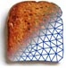

|  | |
| Image Reconstruction in Diffuse Optical Tomography |
What is the Toast++ Matlab toolbox?The Toast++ toolbox is a Matlab interface to the functions in the Toast C++ libraries. It consists of
Matlab provides a development environment that allows rapid prototyping and is better suited for development, debugging and visualisation than the native TOAST C++ code. It should be noted however that the toolbox can be slower and less memory-efficient than an equivalent C++ solution. |